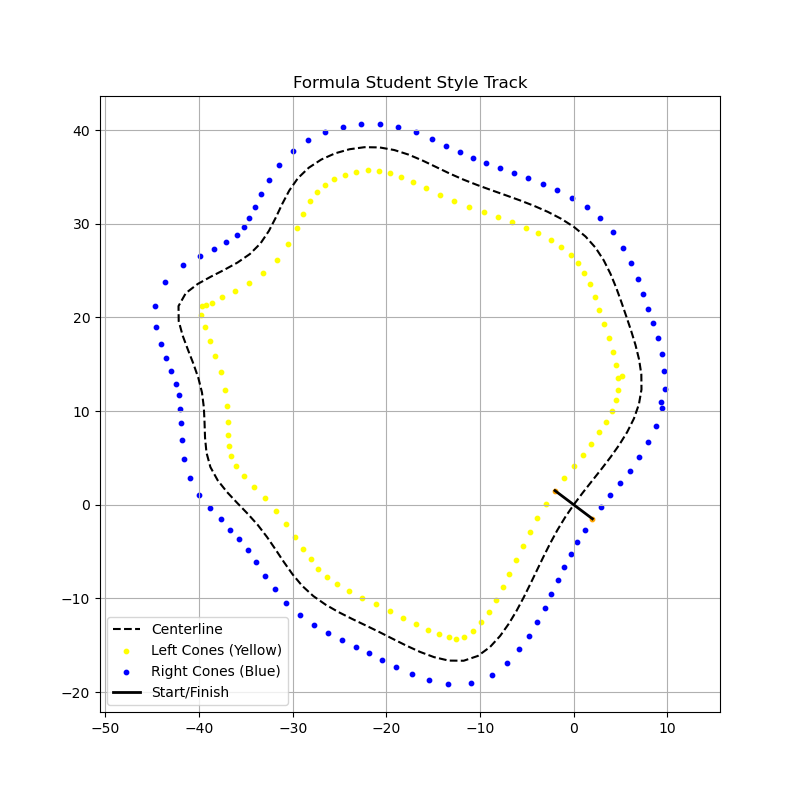

World and Track Building Tutorial
Let’s start your simulation journey by building the virtual sandbox for our autonomous car using:
World: the top-level simulation space
Track: defines the race layout using cones
Cone: the fundamental building block of the track
These components manage everything from race layouts to simulation time and car placement. Think of this as laying out the playground before sending in our autonomous car.
What Is a Cone?
In our simulation, cones define the boundaries of the race track. Each cone has a position and a color, and the car must navigate between them.
from cone import Cone
cone_test = Cone(x=3.2, y=-1.7, colour="yellow")
print("Position of test cone: ", cone_test.get_position())
Attributes:
x, y: position
color: “blue”, “yellow”, or “orange”
radius: default 0.1 m
Pro Tip:
Use orange cones to define start line boundaries. blue = left, yellow = right!
Bonus Cone Type: TrackedCone
The TrackedCone is an extended version used for cone persistence across frames:
TrackedCone(x, y, color, id)
It includes:
id: unique cone identifier
last_seen: frame index
missed_count: how many frames it’s been invisible
The World Class
The World class is your top-level container — it holds all tracks and cars.
from world import World
world = World("Earth")
You can add tracks into this world. All existing worlds live in a global worlds list for easy tracking.
Try This:
Print all world names after creation:
print("World Name: ", world.name)
Track Time!
Each world can have multiple tracks, which are sequences of cones defining a racing layout.
from track import Track
cones = [
[[0, 0], "orange"], [[0, 0], "orange"], # Start line
[[2, 2], "blue"], [[2, -2], "yellow"], # Track layout
[[7, 2], "blue"], [[7, -2], "yellow"],
[[12, 2], "blue"], [[12, -2], "yellow"],
[[17, 2], "blue"], [[17, -2], "yellow"],
]
track = Track(world, name="Straight Line Test", cones=cones)
Every cone is either:
An actual Cone object, or
A list containing cone coordinates and color: [[x, y], color]
Fun Fact:
Orange cones define the start line. Their midpoint becomes the starting position.
Try This:
Log or visualize the start point:
print("Starting position of track: ", track.start_point)
Managing Cars on a Track
Add a car to your track (we’ll fully define the Car later):
track.add_car(car) # Car class will be discussed in the Vehicle Modeling section.
Get the names of all cars on this track:
print(track.get_car_names())
You can also query cones by color:
blues = track.get_cones_by_color("blue")
Track Class API Overview
Method |
What It Does |
|---|---|
add_car(car) |
Adds a car to the track |
get_car_names() |
Returns names of all cars on track |
get_car_by_name() |
Returns car object by name |
get_cones_by_color() |
Filters cones by color |
Bonus: Create Your Own Track
Procedural Track Generator (FSAE Style)
Why hand-place cones when you can generate them with a script?
This section introduces the Track Generator pipeline (not necessarily integrated within the autonomous architecture) — a procedurally generated FSAE-style loop complete with yellow and blue cones, smooth centerlines, and a clean start/finish.
{kind=link}
Files Involved
File |
Role |
|---|---|
track_generator.py |
Builds centerline and cones procedurally |
visualizer.py |
Matplotlib preview of the generated track |
exporter.py |
Saves JSON and CSV versions of the track |
main_generate_track.py |
Command-line interface to the pipeline |
How It Works
In main_generate_track.py, you define:
FILENAME: the name of JSON file
num_waypoints: how many control points (affects curvature)
track_width: width between yellow and blue cones
cone_spacing: distance between cones
total_length: target track length in meters
show_centerline: whether to show or hide the centerline in the plot (centerline will be created regardless)
FILENAME = "fs_track.json"
num_waypoints = 18
track_width = 5
cone_spacing = 5
total_length = 500
show_centerline = 1
Cones are offset from the centerline using normal vectors — this ensures spacing is consistent and clean.
Start/Finish Line
The first pair of cones (left/right) are colored orange and used as the start line:
left[0] = {"x": ..., "y": ..., "color": "orange"}
right[0] = {"x": ..., "y": ..., "color": "orange"}
These should match an FSAE Driverless event expectation of an orange start marker!
Export to JSON / CSV
By default, tracks are saved in a JSON file that will be loaded into the script if it already exists. In our pipelines however, we will be using the exported CSV file from the track generator. Either file formats works as long as variables are consistent.
Command Line Generator
The full track generation pipeline can be run with a CLI tool:
python main_generate_track.py --force --export-csv
Arguments:
–file: output JSON file (default: fs_track.json)
–export-csv: save a CSV version of the track
–force: regenerate even if the file already exists
The JSON file works great for loading back in. The CSV file is human-readable and can be used in analysis tools. Note that if a JSON file already exists, the script will automatically load that file and plot it. If you want a new track, use the –force argument.
In the main_generate_track.py file, customize with your own defaults.
Try This
Vary num_waypoints → What happens to corner sharpness?
Set cone_spacing = 2.5 → More cones, tighter perception
Open the CSV in Excel or plot it manually using pandas
Summary
You now know how to:
Build structured tracks using cone objects
Organize tracks within simulation worlds
Generate full FSAE-style tracks with smooth curvature
Preview, export, and customize tracks via CLI or script
Next up: Vehicle Modeling — understanding the physics of your car and what makes it go!